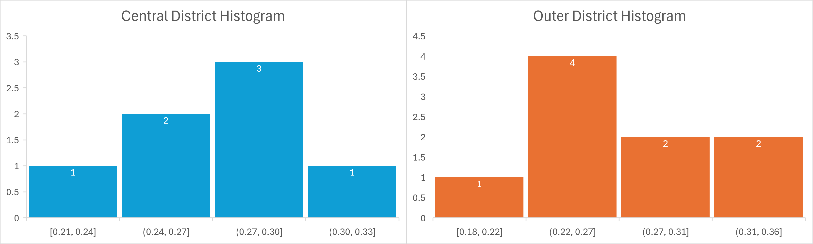

Problem Set 1 · October 2026
Depression and Districts
The question
Among respondents with a valid reported district, was the share screening positive for depression higher within the seven central districts than in the nine outer ones?
The data
The data was collected through a survey conducted by NYU Shanghai through the internet, with IP addresses used to verify the participant was within Shanghai. Individuals without an internet connection were excluded, and the participants were chosen on a first-come first-served basis with 10% oversampling. The survey was conducted between the 29th April and the 1st of June, 2022. Data collected relevant to my question include the binary depression value, which used a PHQ-9 depression questionnaire with an unstated cutoff to choose if an individual was depressed, a geocoded coordinate, and a self-reported district converted into an integer code. Of the 3,348 respondents, 553 were excluded for not having a geocoded coordinate. A separate file was used with vectorized boundaries of each district alongside their survey code and name, both in Chinese and English. This file had no listed license.
The method
The method was relatively simple. First, the maps were set to CRS EPSG:32651, and the seven central districts were defined to be Huangpu, Xuhui, Changning, Jing'an, Putuo, Hongkou, and Yangpu(Survey Codes 1-7). All nine other districts were considered outer districts. A numeric, binary code field was added to indicate if a response's district was a central district or not for categorization. Then, a rough margin of error was calculated using the percent of respondents in the central districts whose geocoded coordinates did not match their district code using the vectorized boundaries, and the same was computed for outer districts. Then, the depression boolean was converted to an integer, with one for true and zero for false. Lastly, I got the statistics for this integer depression value by the category of whether the respondent was in a central district. One of the values this returned included a mean that would be interpreted as the share. The results are summarized in the following table. A map was also produced with depression share by district for visuallization purposes, and a histogram was created for both the central and outer districts to show their distribution around the mean.


What I found
Unweighted shares from the 2022 Shanghai Lockdown Survey, a purposive online sample: 2,795 of 3,348 respondents had a coordinate. The rest were excluded due to the lack of coordinates. Shanghai central districts were defined as including Huangpu, Xuhui, Changning, Jing'an, Putuo, Hongkou, and Yangpu(Survey Codes 1-7), while the outer districts were defined as including Pudong New Area, Minhang, Baoshan, Jiading, Jinshan, Songjiang, Qingpu, Fengxian, and Chongming (Codes 8-16).
The central districts had a mean share of depression of 26.8%, while the outer districts had a mean rate of depression of 27.2%. The difference in shares is -0.4%, with the Central Districts having a slightly lower share of Depression, but this difference is well below the rough margin of error of both groups(12.7% for the central districts, 5.9% for the outer districts), so there is no significant difference between depression rates inside and outside the central districts.
What this does not show
It is worth noting that my analysis cannot see respondents who lack longitude and latitude, valid district codes, or a value for the “Depression” field, although all respondents had valid district codes and valid values for the “Depression” field. Furthermore, I ran a sensitivity analysis by repeating the method twice, making minor changes to the method each time. In the first, I disregarded the respondent's provided code and used the respondent's location data to choose the districts using the vectorized boundaries, and in the second I included all respondents regardless of if they had location information by relying on the district code the respondents provided. This served to add back in the 553 responses which were discarded due to lack of coordinates. The first modification resulted in the central districts having a lower mean share of depression, while the latter had the central districts with a higher mean share of depression, but the magnitude of the difference was less than one percent in both cases. This is less than the calculated rough margin, and so I do not believe that the data supports any actual difference between the two categories when it comes to the rate of depression that cannot be attributed to random noise from the sampling of respondents.
AI use: No AI tools were used for this entry.